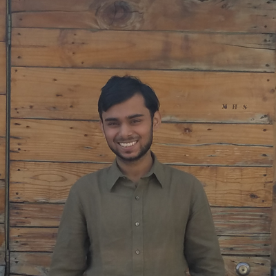

The website is a result of a 11 day workshop on documenting evictions in Delhi and understanding their impact on communities through ethnographic research methodologies. The workshop was led by architect/urbanist Swati Janu, in collaboration with architect/urban developer Friederike Thonke and web designer Mayank Chandak as part of CEPT University's Summer Winter School. The project also owes its development to the guidance of Abdul Shakeel and Gautam Bhan from Indian Institute for Human Settlements (IIHS) as well Douglas Wyatt from Human Rights Law Network (HRLN).
The 21 undergraduate and postgraduate students in the workshop, whose backgrounds varied from architecture, construction technology and planning to geomatics, share their reflections on the project below.

Aditi Rai
What could be a greater indictment of planning than nearly 75% of the city living in housing that is apparently “unplanned”? Walking through the overwhelmingly dense bastis of Delhi, encountering temporary, fragile and vulnerable housing materials, the absence of sanitation, waste, and sewage services; you are struck by the contrast in the livelihood conditions in the city. The identity of the people and the place in these bastis is so rich and deep that erasing them forcibly from the face of the city sounds highly shallow for causes such as urban development and beautification.

Arka Dipta Banerjee
Eviction is a process, not a decision that should be taken overnight. This is the first thing that this workshop has taught me. In our country, capital greed has overpowered every sector of the society. We often forget to think about the lives of the people who get evicted in the name of capital driven development that does not serve the other half of our country. There is an urgent need to spread a strong message to all the sectors of the society about the unlawful acts which are being carried out in the processes of eviction.

Yashi Sharma
The word 'slum' is often associated with the words 'eviction' and 'clearance'. This project has helped me in questioning the very fundamental meaning of the so called rational process of evicting slums, in the light of its impact on human rights and right to the city.
Delicia Konsam
The term 'slum' that we often use to describe many informal settlements is nothing but full of life and a power-house of economic genesis. A city is not a city without its people and cities are the accumulative confrontation of hardships and challenges by its people right from the beginning of human civilization. It will definitely be a grave misdeed if we tend to ignore these problems faced by the inhabitants. It is a high time that 'evictions' are replaced with 'admittance' along with economic empowerment of the former.

Ravi Shekhar
We took up two sites to find out how evictions have taken place, what problems people are facing before and after eviction and how is their condition right now. I saw first hand how miserable the condition of the Kidwai Nagar slum has become after eviction as they are just barely surviving there. They are hoping and waiting for the authorities for relocation of their homes while the people in Janpath area don't want to move as their jobs are in close proximity, and they have called that place home for over 50 years now.
Shweta Singh
In understanding the eviction process, we also came to understand how people feel towards their resettlement process, and their conflict of interests in leaving the place they always knew and settling in a new place with its new sets of challenges

Poorva Priyadarshini
The last few days brought to light the true scenerio of what is happening within the government's processes when they talk about resetting and relocation. Hopefully the government will take initiatives to give these people what they actually deserve and they get their right to shelter.
Garima Singh
The whole course revolved around ‘eviction’ which is a central issue in slums around the globe. The course also covered the aspect of resettlement of few evicted settlements which helped us identify the people’s concerns regarding the resettlement. The site visits and interviews helped me gain a new insight on how resettlement is not necessarily a problem - the way it is carried out is a problem. Also, evictions may not always be forced, in some cases they could be desired by the communities living there.
Shruti Rastogi
This workshop experience has been transformative for me – both academically and personally. Having able to interact and reach out to the sufferings and implications caused to people due to ruthless evictions and there seldom unorganised and harsh resettlements to the outskirts, was crushing and also most importantly, a realisation. The concept of sustainable cities that we all so devotedly talk about is not going happen by designing and planning cities for the car owners but for masses who reside in these bastis.

Redekar Vijaya Subhash Pushpa
Slum resettlement is a very common term in urban context, but the process that precedes resettlement i.e. eviction, is very rarely talked about and people have a very shallow understanding about it. This workshop has equipped us with the knowledge of the formal procedures of evictions, its legalities, emotional traumas of slum-dwellers, the aftermath of eviction etc. I believe that this website will further make more people aware in this context.

Sanjay Kini
It was a very humbling experience being a part of this workshop which showed me a different walk of society who always live on the edge. It helped me appreciate life in general.
Mansi Kumar
This workshop helped me to understand ‘Eviction’ from people who went through them. Every person has their own story regarding eviction – some of them are happy and some of them are sad. Most of these evictions were done for development – but development for whom? Housing is a fundamental human right for every section of society and it is the government's obligation to guarantee that everyone can exercise this right.

Shelly Vaish
At a time when our government envisions of our cities becoming 'smart', this workshop exposed me towards some mind-boggling questions of who the city belongs to and right to shelter for the urban poor. Why are the people who migrate to cities in search of better livelihoods always forced to live in the most vulnerable areas bereft of basic facilities and also forced to face the vagaries of 'eviction' from their place of settlement and livelihood as well?
Aryan Kumar Arya
This course gave me a different perspective and an inside view to another side of the society.